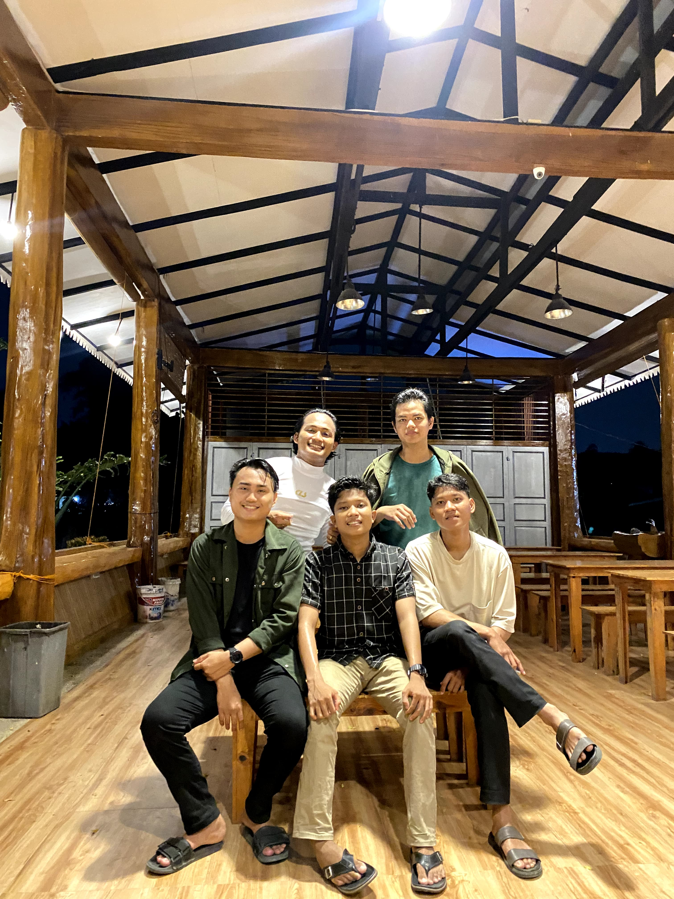
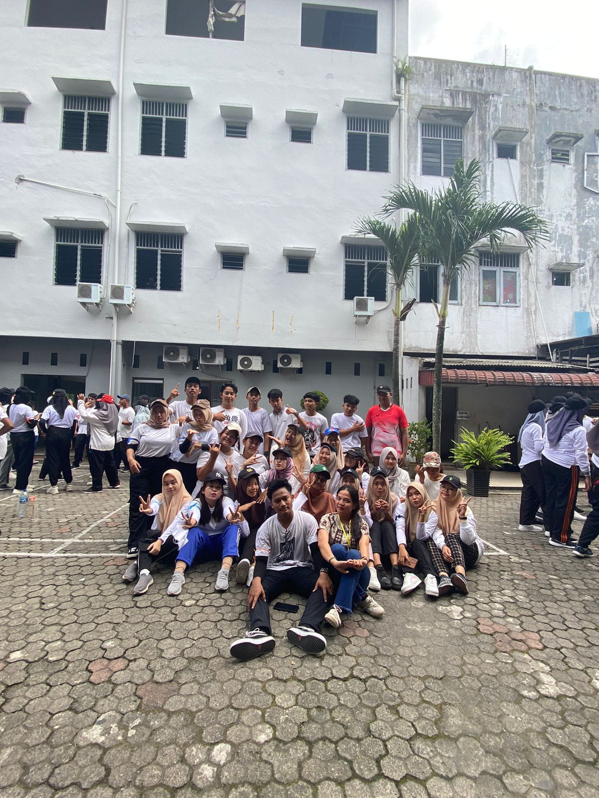
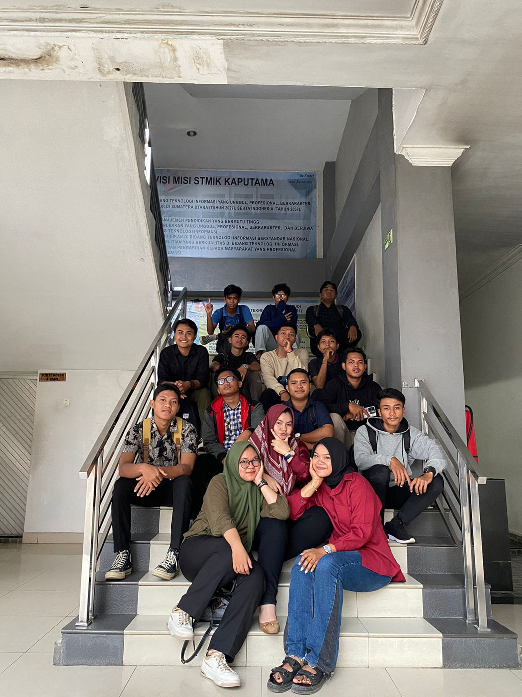
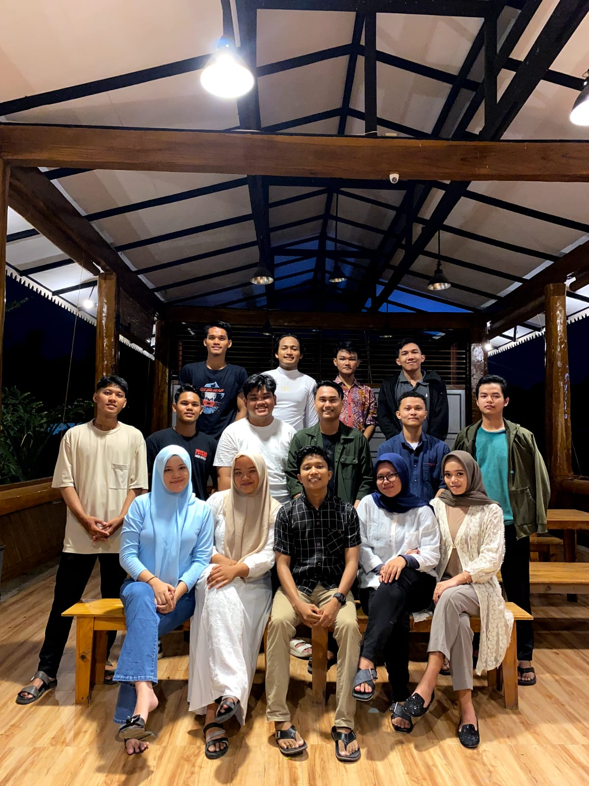
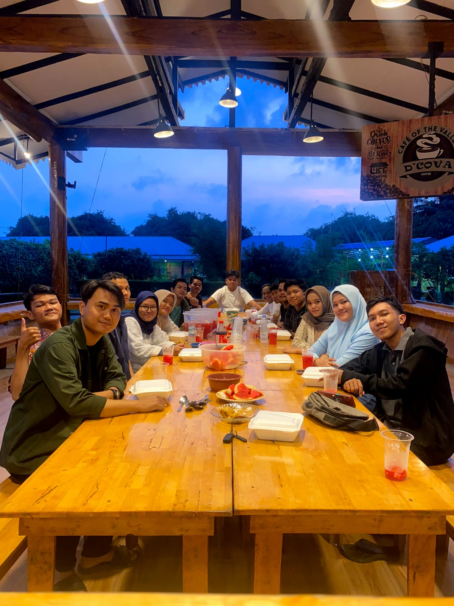

TEKNIK INFORMATIKA - C

CIRCLE BERAK LANCAR
🔍
LOGO TI-C
🔍

OSPEK
🔍

AWAL MASUK KULIAH
🔍

BULAN RAMADHAN
🔍

BUKBER PART I
🔍
"In Memory Of All Those Who Passed Away, And Those Who Wandered Off, Never To Return."